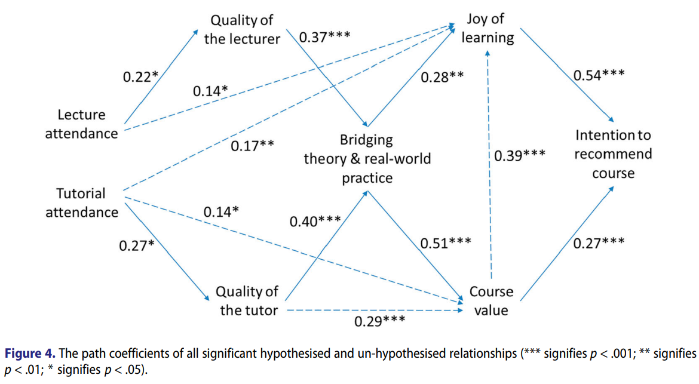

No need to bother students to fill in course evaluations¶
For decades, universities have been asking their students about their experiences with their courses, with the goal of improving the quality of the courses. However, it is mostly misconceptions instead of real successes.
Survey questions¶
Survey question: What is your overall rating for the course?¶
A critical meta-analyses concluded that there is no relationship between the students' responses and any metric related to course quality, as it is mostly small studies in pedagogy with low rigor that happen to find a relation [Clayson, 2009].
This question is used in many course evaluations, such as the European bioinformatics training center called ELIXIR [Gurwitz et al., 2020].
Survey question: How satisfied are you with the course?¶
A critical meta-analyses concluded that there is no relationship between the students' responses and any metric related to course quality, as it is mostly small studies in pedagogy with low rigor that happen to find a relation [Uttl et al., 2017].
Survey question: How confident are you in the learning outcomes?¶
Even student self-assessment in achieving the courses' learning outcomes have no relation with actual test performance [Liaw et al., 2012]. This is a study on 33 learners.
Survey question: Would you recommend this course?¶
[Ang et al., 2018] did a study, on 113 learners,
that concluded that having a positive response
to this question is mostly determined by the joy of learning
in the course. This joy of learning is most strongly determined
by tutors, not by the teacher.
The remaining determinant for a positive response is the perceived value of the course, which itself is mostly determined by the course bridging theory and real-world practice.
This survey question hence mostly measures the quality of the tutor(s) and to a lesser extent the estimated benefit a course provides to the learner. The study found that measuring its 7 determinants predicts the answer to this survey question in around half of all cases.
Which relations did they find?

[Ang et al., 2018], figure 4
This question is used in many course evaluations, such as the European bioinformatics training center called ELIXIR [Gurwitz et al., 2020].
Survey question: Say something positive, say something that can be improved¶
Survey question: Any feedback?¶
¶
[Fernandez and Mateo, 1992] checked many survey questions
and how these questions correlated to two dimensions
of teaching (teaching competence demonstrated and motivational skills).
The value is the rightmost value in table 2a, which is for university
level schooling
| F1 | Description |
|---|---|
| 0.906 | Explains the content of each subject coherently |
| 0.902 | Explains clearly |
| 0.892 | Comparative mark for the teacher as against others (same year) |
| 0.892 | His/her explanations held my attention in class |
| 0.881 | His/her way of teaching helps in the understanding of the subject matter |
| 0.831 | Shows him/herself competent in the content of the course given. |
| 0.856 | Reflects the usefulness of the class content explained. |
| 0.795 | Shows adequate previous preparation for the class. |
| 0.846 | Thanks to what I have learned I feel a greater interest for this area. |
| 0.826 | Establishes an adequate interrelation between the different subjects. |
| 0.864 | Arouses students' interest in the subject. |
| 0.804 | I would like to follow another course again with this teacher. |
| 0.852 | Answers questions accurately` |
| 0.848 | Secures students' attention for the subject matter explained |
| 0.781 | Shows enthusiasm for the class content explained. |
| 0.736 | Alludes to the implications of different viewpoints. |
F1= teaching skill demonstrated
| F2 | Description |
|---|---|
| 0.903 | Encourages the expression of the students' own ideas. |
| 0.888 | Shows him/herself accessible in his/her relationship with students |
| 0.872 | Motivates students to ask about any doubts. |
| 0.835 | Stimulates student participation in class. |
| 0.854 | Shows interest in the concerns of each student. |
| 0.807 | Takes students' valuable ideas into consideration. |
F2= motivational skill demonstrated
See [Marsh, 1984] for a paper where 9 dimensions of teacher quality
are used.
Questionnaires have no effect¶
[Spooren et al., 2013]
Ways to improve questionnaires¶
See [Martínez-Gómez, 2011].
References¶
[Ang et al., 2018]Ang, Lawrence, Yvonne Alexandra Breyer, and Joseph Pitt. "Course recommendation as a construct in student evaluations: will students recommend your course?." Studies in Higher Education 43.6 (2018): 944-959.[Clayson, 2009]Clayson, Dennis E. "Student evaluations of teaching: Are they related to what students learn? A meta-analysis and review of the literature." Journal of marketing education 31.1 (2009): 16-30.[Fernandez and Mateo, 1992]Fernandez, Juan, and Miguel A. Mateo. "Student evaluation of university teaching quality: Analysis of a questionnaire for a sample of university students in Spain." Educational and Psychological Measurement 52.3 (1992): 675-686.[Gurwitz et al., 2020]Gurwitz, Kim T., et al. "A framework to assess the quality and impact of bioinformatics training across ELIXIR." PLoS computational biology 16.7 (2020): e1007976. website[Liaw et al., 2012]Liaw, Sok Ying, et al. "Assessment for simulation learning outcomes: a comparison of knowledge and self-reported confidence with observed clinical performance." Nurse education today 32.6 (2012): e35-e39.[Uttl et al., 2017]Uttl, Bob, Carmela A. White, and Daniela Wong Gonzalez. "Meta-analysis of faculty's teaching effectiveness: Student evaluation of teaching ratings and student learning are not related." Studies in Educational Evaluation 54 (2017): 22-42.[Marsh, 1984]Marsh, Herbert W. "Students' evaluations of university teaching: Dimensionality, reliability, validity, potential biases, and utility." Journal of educational psychology 76.5 (1984): 707.[Martínez-Gómez, 2011]Martínez-Gómez, Mónica, et al. "A multivariate method for analyzing and improving the use of student evaluation of teaching questionnaires: A case study." Quality & Quantity 45.6 (2011): 1415-1427.[Spooren et al., 2013]Spooren, Pieter, Bert Brockx, and Dimitri Mortelmans. "On the validity of student evaluation of teaching: The state of the art." Review of Educational Research 83.4 (2013): 598-642.